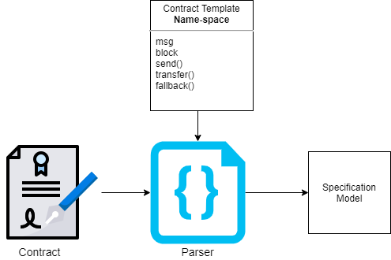
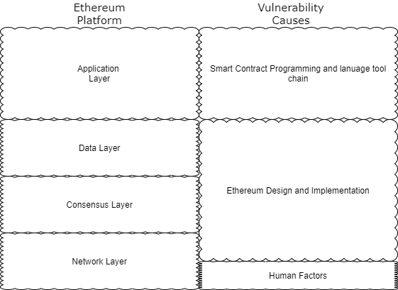
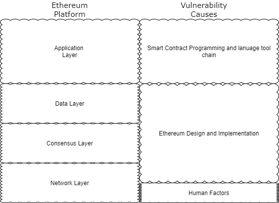

Formal Verification of Smart Contracts
Omar Jarkas, Naipeng Dong, & Guangdong Bai
Background
The introduction of Smart Contracts is paving the way for a new paradigm of financial arrangements and interactions. With the security, immutability, and decentralization characteristics of the Ethereum platform, Smart Contracts are changing the way deals are made. However, those same characteristics bode some serious restrictions when developing such contracts. Due to the immutable coupling of contract code with financial values, code written should always be of ultimate efficiency, security, and correctness. Formal Verification has emerged as the prominent method for testing the correctness of contracts before deploying them to the chain. However, finding the right mix between the formal methods, design patterns, and testing tradeoffs are often challenging and require extra implementation. This paper introduces a parser that attempts to bridge the gap between a general formal verification language that is gaining plenty of traction in the past years, Dafny, with the most prominent programming language used to develop Smart Contracts. By using a specification model for accurately modeling Smart Contract in Dafny, the parser has only to inject such model and Dafny standard idioms and best practice.

Framework and Parser
In this project, we introduce a formal template and parser to implement a formal verification model using the Dafny Language. The Template is built on the work of a Github Repository to try to implement a specification model in Dafny for Ethereum Smart Contracts. The Specification model is in the context of the global namespace of the Solidity language that enables it to interact with other contracts, users, and the blockchain environment. The specification model supplies the formal verification language with the adequate functions to mimic the Ethereum Virtual Machine Environment by providing the global function and variables used in Solidity.
The implementation of the specification model allows the efficient reasoning and formalization of the contract's code. However, the Dafny language uses a series of recommended best practices and standard idioms for effective verification. The Parser attempts to the facilitate a more smooth implementation of such practices. The parser essential extracts the important information from Smart Contracts such as its name, variables, and functions and attempts to build a skeleton from the information while implementing the specification model and the practices mentioned.
Smart Contracts
In 2014, the Ethereum platform along with its virtual machine emerged. Ethereum came to solve many problems faced in Bitcoin that made it limited in potential and support Smart Contracts. Smart Contracts are nothing but computer programs deployed on the blockchain and executed by the virtual machine. Such applications can facilitate the smooth collaboration between separate organizations and independent parties. They are called contracts due to the blockchain’s ability to guarantee enforceability of specific predefined condition and agreement mimicking real-world contracts.
Formal Verification
Smart Contracts give a good example of applications where failure is unacceptable. Similar to the Ariane 5 Rocket Rocket, simple software bugs can cause significant damage and loss. While formal methods are not new, such software incidents are pushing more and more industries to consider formal verification as a means to eliminate whole classes of unpredicted errors and capture all possible behavior through specifying them. In contrast to dynamic verification, formal verification is the process of using static analysis based on a mathematical proof transformation to prove the correctness of hardware and software processes. The process includes defining clear formal specification semantics in the form of a brief mathematical description of the algorithm to satisfy clear behavior properties. Such descriptions must outline clear and concise code behavior based upon mathematical models and theorems. Often the specification of high-level code can be translated into other high-level languages that support specification semantics-based and deductive and inductive reasoning. However, such specification can be extremely hard to model accurately and deduce due to the generality of the system, hence, finding an adequate design formalization technique can also be difficult. Also, while formal verification's end goal is to prove the correctness of algorithms and systems by implementing code specification, there are many approaches introduced in the field to tackle the challenge of correctness. However, one of the reason why formal verification is very suitable to verify Smart Contract application is due to its independence of simulation environments and to prove correctness.
 

Demonstration
The YouTube video demonstrate the use and implementation of the global name-space template and the Java parser. The video start by outlining the aim and method used. After that, it represents the template used and contract verified by it. The video depict the vulnerability highlighting and the use of the template is Dafny converted contracts as well as the vulnerabilities detected and the process of verification while show Dafny recommended design patterns and best practice. To implement the template as well as Dafny's best practice a simple parser was constructed in Java taken is Smart Contracts and output a Dafny file that include the all the method and variables of the contract along with the Dafny design patterns.
Related Work
- Pegasus Team is Consensys using Dafny to formal verification Ethereum 2.0 Specs
- Using Dafny To Formally verfy Proof of Stake Consensus algorithm
- Using F* to Formal Verify Smart Contracts
- Using Isabelle/HOL to Formal Verify Smart Contracts on the Bytecode
- Surveying Smart Contract Security Patterns and Vulnerabilities
- Survey of Formal Verification tools and techniques used on Smart Contracts
Refferences
- [1] Nakamoto, S., “Bitcoin: A peer-to-peer electronic cash system.” [Online]. Available: www.bitcoin.org
- [2] Zdun, M. W. and Uwe, “Smart contracts: Security patterns in the ethereum ecosystem and solidity,” 2018 International Workshop on Blockchain Oriented Software Engineering (IWBOSE).
- [3] Massimo Bartoletti, L. P., “An empirical analysis of smart contracts: Platforms, applications, and design patterns,” International Conference on Financial Cryptography and Data Security, vol. 10323.
- [4] Guido Governatori, F. I., “Evaluation of logic-based smart contracts for blockchain systems,” International Symposium on Rules and Rule Markup Languages for the Semantic Web, vol. 9718, pp. 167–183.
- [5] Tianyu Sun, W. Y., “A formal verification framework for security issues of blockchain smart contracts,” vol. 255.
- [6] Singh, A., Parizi, R., Zhang, Q., Choo, K.-K. R., and Dehghantanha, A., “Blockchain smart contracts formalization: Approaches and challenges to address vulnerabilities,” Computers Security, vol. 88, p. 101654, 10 2019.
- [7] Bhargavan, K., Delignat-Lavaud, A., Fournet, C., Gollamudi, A., Gonthier, G., Kobeissi, N., Kulatova, N., Rastogi, A., Sibut-Pinote, T., Swamy, N., and Zanella-Beguelin, S., “Formal verification of smart ´ contracts: Short paper,” in Proceedings of the 2016 ACM Workshop on Programming Languages and Analysis for Security, ser. PLAS ’16. New York, NY, USA: Association for Computing Machinery, 2016, p. 91–96. [Online]. Available: https://doi.org/10.1145/2993600.2993611
- [11] Chthonic7, “Solidity-to-dafny,” 2018.
- [12] 2016-2018. [Online]. Available: https://solidity.readthedocs.io/en/v0.5.0/ 050-breaking-changes.html -->